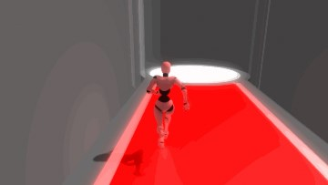
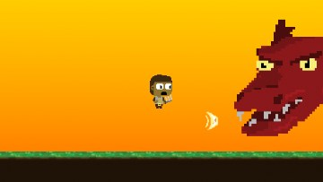
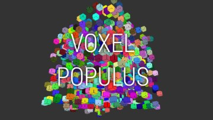
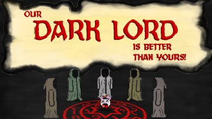
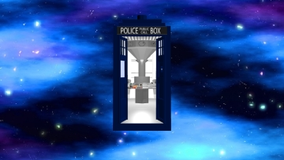

Projects

Primary Run
C#Unity
A third-person color-based puzzle game with the goal of getting everyone to the exit. Made for Global Game Jam 2014.
Links: GGJ Page

Radial Blur
HaxeHaxePunk
A wave-based shooter. Made for a local "One Year Game Challenge++" 2013-2014, hosted by IGDA Manila.
Links: Google Play itch.io

End Game+
HaxeHaxePunk
A game that deals with the idea of a life after the boss fight. Made for Global Game Jam 2015
Links: GGJ Page

Voxel Populus
JavascriptWebGL
A block-building sandbox game made for a local hackathon, YouthHack Code Weekend
Links: Source Code GitHub Pages

Our Dark Lord (is Better than Yours)
HaxeOpenFL
A competitive PvP first-person game, in which cults race to summon their demon before everyone else. Made for Global
Game Jam 2016.
Links: GGJ Page

TARDIS Demo
JavascriptWebGL
A 3D render of a TARDIS model, using stencil techniques to simulate it being bigger on the inside. Made for a school project.
Links: Source Code GitHub Pages